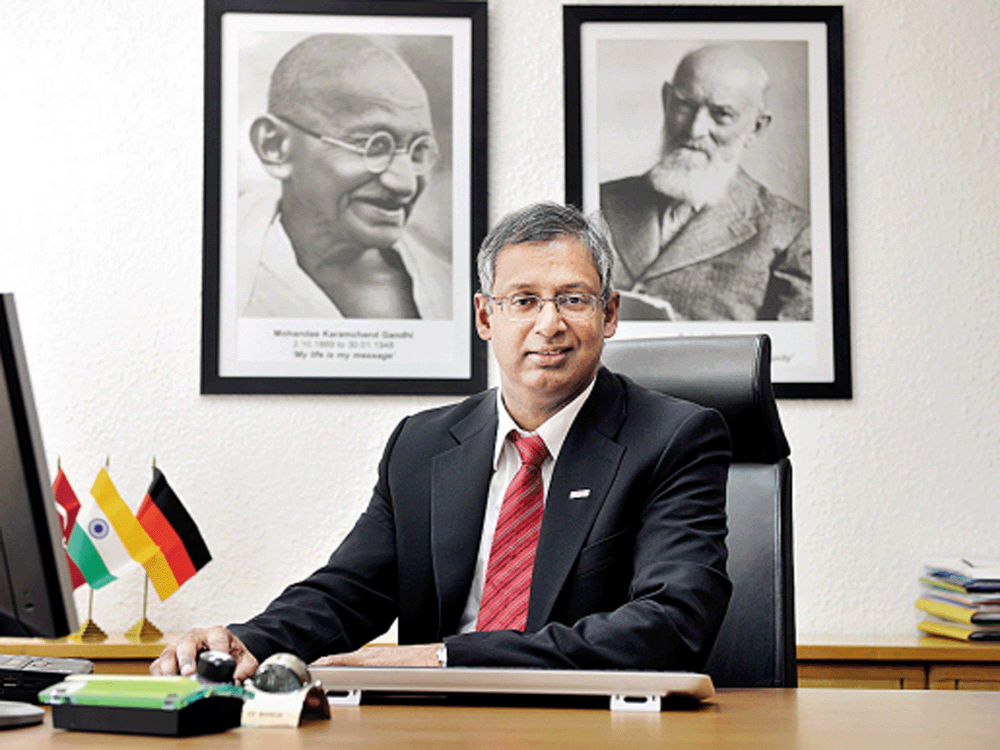
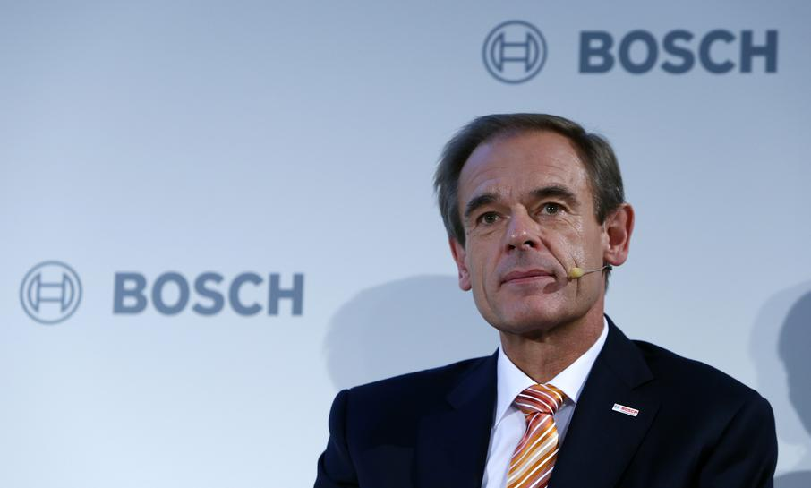
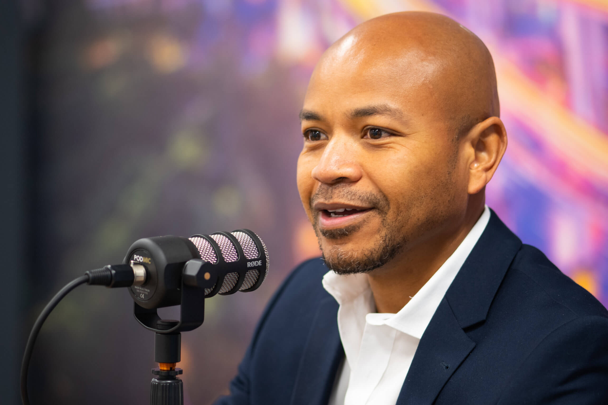
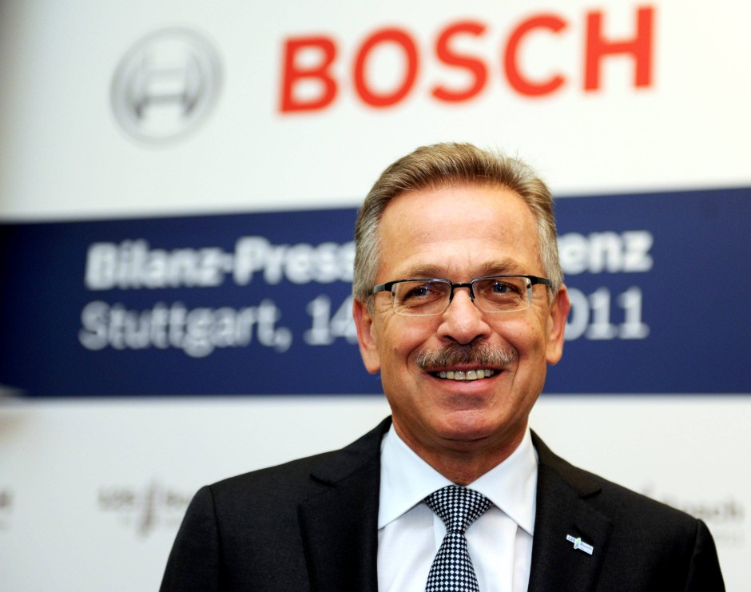

Soumitra Bhattacharya
Soumitra is currently President for Bosch Group in India and the MD for Bosch Ltd. He is married to Dr Chandana Bhattacharya and has interests outside his work on social causes, travelling, photography, as a speaker in national and
international forums on Economics, Business Excellence, General Management and Culture . He has two children, Aditya and Ayesha.

Volkmar Denner
Denner has spent his whole career with Bosch.[3] In 2012, when he was head of research and engineering, beat out auto parts chief Bernd Bohr to replace incumbent Franz Fehrenbach in a move that made him only the seventh CEO since Bosch
was founded in 1886.[4] During the Hannover Messe in April 2016,Baden-Badener Unternehmer-Gespräche (BBUG),Deutscher Zukunftspreis,Denner graduated with a doctorate in physics from the University of Stuttgart Member of the Board
of Trustees Member of the Board Denner was among the 15 German CEOs who were invited to a private dinner with President Barack Obama.[5]

Vonjy Rajakoba
Vonjy began his career with the company in 2009 in Germany, heading up the European sales organisation for Bosch Sensortec, before moving on to lead the worldwide sales team. Prior to taking over his current position, Vonjy set up
and led the Bosch Power Tools business in Africa. Vonjy says: “With a decade of experience working across different parts of the business, I am delighted to be on board as Managing Director of Bosch UK. I am really looking forward
to a new challenge, whilst still working closely with the Power Tools team - one part of the Bosch business that I am especially passionate about.”

Franz Fehrenbach
Fehrenbach studied industrial engineering at the University of Karlsruhe and joined Robert Bosch GmbH in 1975.[2] In 1988, he was transferred to the United States, but he returned to Germany in 1989. In 1990, Fehrenbach became Vice-CEO
of the corporation. In 2003, he then became chairman of Robert Bosch GmbH, succeeding Hermann Scholl.